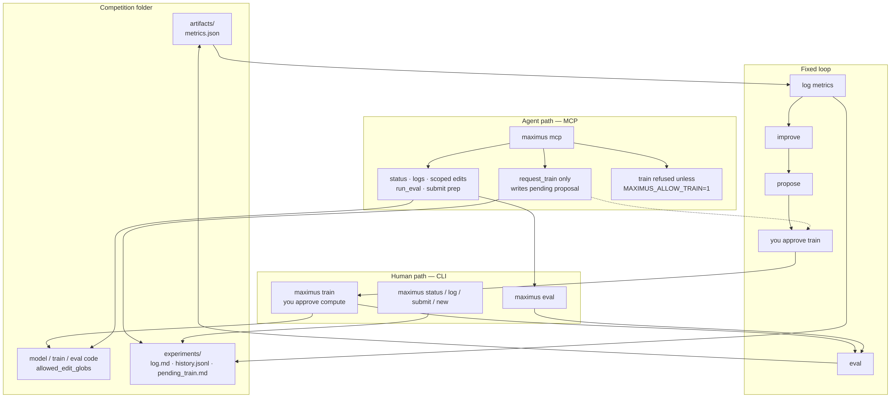

Maximus
An LLM harness for contest ML — with a human on the train gate.
The problem
Contest work with a coding agent usually degrades into the same mess: you paste logs into chat, the model suggests a tweak, and then either you babysit every train yourself or you let it fire runs unsupervised. I've done both. One wastes my attention; the other burns compute I meant to approve. I wanted a fixed loop where the agent does the grunt work and I still own when training happens.
Why I built it
I built Maximus so the agent could iterate on contest models without me pasting logs by hand — and without unsupervised compute burn. The shape is fixed on purpose: propose → (you approve train) → eval → log → improve. The agent may request a train. I run it.
What I built
Maximus is a Python harness around competition folders. There's a CLI for
train, eval, submit,
status, log, and new, plus an MCP
server so a Cursor agent can check status, read logs, make scoped edits,
run eval, prep a local submission, and call request_train.
Training stays on the human path: the agent writes a proposal; I run
maximus train. MCP train is refused unless
MAXIMUS_ALLOW_TRAIN=1, and I'd rather keep that flag off.
Each successful eval appends to an experiment log
(experiments/log.md and history.jsonl) under a
strict metrics.json contract — a finite float
metric, no soft parses. A built-in toy_binary
competition proves the loop on CPU (logistic regression, optional random
forest, ROC-AUC). maximus new scaffolds another contest from
a template. It is not AutoML that trains in a loop on its own, not a
DrivenData/Kaggle uploader, and not a GEMS solution — real contests land
later as new folders.
This is the primary MVP. Future changes are already in the works toward the final shape — enough of the loop to use and trust today, without pretending the product is finished.
Three decisions
1. You approve train; the agent only asks.
The agent inspects, makes one change, and calls
request_train. That writes a pending proposal. I review it,
then run maximus train myself. Human owns train and any cloud
spend. No autonomous multi-train loops on the default path.
2. MCP for grunt work, not for burning GPUs.
Status, logs, scoped file I/O, eval, submit prep, diagnose — those are
agent tools. Train is gated. Per competition, eval can be locked down too
if it's expensive. The agent edits only allowed_edit_globs,
one change per cycle.
3. A hard metrics contract and a real log.
Eval has to leave artifacts/metrics.json with a numeric
metric. Soft or partial parses fail. Successful runs land in
the experiment log so the next propose step has evidence, not a chat
scrollback I copied by hand.
Proof

request_train, eval). Train stays on the human CLI unless
MAXIMUS_ALLOW_TRAIN=1. This diagram is the MVP shape; more
is planned toward the final product.
From the public repo (README,
docs/QUICK-START.md, docs/OPERATOR-GUIDE.md):
- Fixed propose → approve-train → eval → log → improve loop
- MCP
trainrefused unlessMAXIMUS_ALLOW_TRAIN=1 toy_binaryCPU path: train / eval / status- Experiment log + strict
metrics.json(metricas finite float) - Guardrails: one change per cycle, allowed edit globs, no contest-site upload in MVP
Why I built it this way
If an agent is going to help on contest ML, it shouldn't get unsupervised compute. It can propose, edit within the globs, eval, and log. I keep the train gate. That boundary is the product — and this MVP is where that product starts, with more shape still coming.